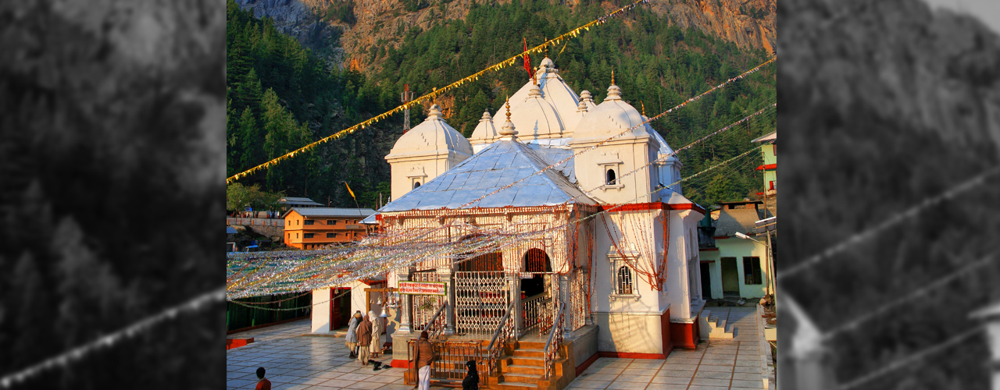
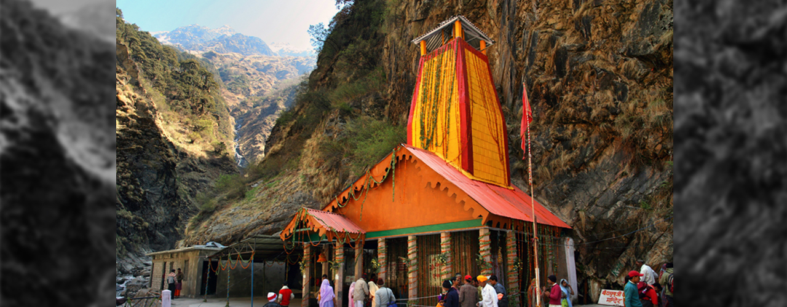

Gangotri

- Sacred town dedicated to Goddess Ganga's temple
- One of most popular spiritual destinations in North
India - One of the four stops of Char Dham pilgrimage
- A natural paradise
WHAT TO KNOW
One of the char dhams (the most sacred pilgrimage circuits in northern India with four holy destinations), Gangotri, in Uttarkashi, is a small town with the temple of Goddess Ganga at its heart. A 12-hour drive from Rishikesh, Gangotri is nestled among lofty Garhwal Himalayan peaks, glaciers and dense forests, and is one of highest pilgrimages in India (approx 3,415 m). Other than its divine atmosphere, Gangotri offers stunning vistas all around. According to Hindu legends, the most sacred of all rivers, Ganges (or Ganga), descended from heaven to earth at Gangotri, when Lord Shiva released the mighty river from his locks. The actual origin of the river is at Gaumukh in the Gangotri glacier, 19 km away from Gangotri and is accessible by trekking. After it originates from Gaumukh, the river is known as Bhagirathi and it acquires the name 'Ganga' after the river Alaknanda merges into it near the town of Devaprayag. Kapat is open now for darshan.
BEST TIME TO VISIT
Gangotri becomes a bustling hub of devotees during the Char Dham Yatra season (May to October).
A T T R A C T I O N S


GANGOTRI GLACIER
KEDARTAL
GAUMUKH TAPOVAN
HOW TO REACH
 By Flight
By Flight
The closest domestic airport to Corbett National Park is 50 kms away from Corbett National Park at Phoolbagh, Pantnagar. At 295 Km from Corbett National Park, the nearest International Airport is at Delhi.
 By Train
By Train
The closest railway station to Corbett National Park is Ramnagar, which is 12 km from the Park. Ramnagar is the terminus of Delhi-Moradabad- Ramnagar broad gauge branch of North East Railway.
 By Road
By Road
Most people prefer to drive down to Corbett National Park. It takes approximately six hours from Delhi to cover the 295-km stretch. This Route to Corbett National Park from Delhi takes you through.